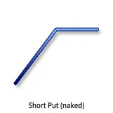
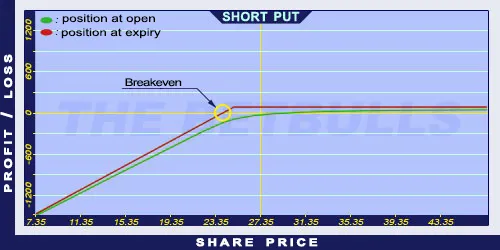

Description and use

Short Put is the sale of a Put option. This position gives the obligation to the option seller to buy an underlying security at an agreed-upon price until a specific future date to the option holder if he/she wishes to exercise the option. When writing a Put option, the writer does not expect the price of the underlying to decrease below the strike price. Short Puts are simple and short-term investments, the expiration should be one month or less. If share prices fall and the option is exercised by the holder, the writer must buy the underlying products. It is recommended to sell OTM Short Put options. It should be applied when it is expected that the market prices are increasing or stagnating.
- Type: Bullish
- Transaction type: Credit
- Maximum profit: Limited
- Maximum loss: Limited
- Strategy: Basic strategy
Opening the Position
Sell a Put option with a strike price lower than the current market price of the underlying security.
Steps
Entry:
- Is the market trend actually increasing or stagnating after the option purchase?
- Write a Put option with lower strike price than the current price of the underlying security (OTM Put). The option should be sold only if the writer thinks that the share price won’t decrease below the strike price.
- Write a Put option with a strike price close to the current price of the underlying security (ATM Put) if there is no upcoming earnings. The option should be sold only if the writer thinks that the share price will rather increase than fall.
Exit:
- The writer hopes that the price of the underlying will increase or stagnate, so the options will expire worthless and he can keep the premium.
- If the share price decreases below the Stop Loss level, the writer can leave the position by buying back the sold option.
Basic Characteristics
- Maximum loss: Strike price - premium. Increasing as the prices fall.
- Maximum profit: Limited. The profit cannot be bigger than the premium received.
- Time decay: Time decay has a positive effect on the Short Put. The closer the option to expiration the more it increases its value. This process accelerates over time, which may be further strengthened by a decrease in the underlying’s volatility.
- Breakeven point: Strike price - premium.
Advantages and Disadvantages
Advantages:
- If implemented correctly and the market is bullish or neutral, the position can be profitable.
Disadvantages:
- Unlimited potential loss if the share price decreases.
- Highly risky strategy, not recommended for beginners.
Closing the Position
Buy back the option or wait for expiry worthless. In the latter case, the writer can keep the option premium.
Mitigation of Losses
Determine the value for the Stop Loss based on the underlying security.
Example

Short Put (naked) strategy example
- ABCD is traded for $27.35 on 12.05.2017. The investor sells a Short Put option which has a strike price of $25.00, expires in June 2017. and costs $1.05 (premium).
- Price of the underlying (share price): S= $27.35
- Premium (Put): P= $1.05
- Strike price: K= $25.00
- Credit: Cr
- Maximum loss: R
- Maximum profit: Pr
- Breakeven point: BEP
- Credit: Cr = P
- Maximum loss (risk): R = K - P
- Maximum profit: Pr = P
- Breakeven point: BEP = K - P
- Cr = $1.05
- R = $23.95
- Pr = $1.05
- BEP = $23.95